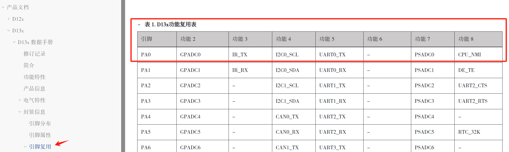

引脚配置
9 Apr 2025
Read time: 3 minute(s)
Luban-Lite SDK 支持多个芯片平台，在 BringUp 之前，务必确认板卡使用的 SoC 具体型号以配置正确的引脚和内存。遵照以下流程确认相应的 SoC 型号并修改配置：
- 确认 SoC 的具体型号并阅读对应的芯片用户手册 —— 引脚复用章节，确认每个引脚能提供的功能。
下图是 D13x 功能复用表示例，其中 PA0 功能 1 为普通 GPIO 口，功能 5 为 UART0_TX：

- 打开 SoC 的
target/SoC/board/pinmux.c
引脚定义文件，配置引脚数量。
Luban-Lite SDK 各个开发板引脚定义在 target/SoC/board/pinmux.c 文件中。SDK 中对于 SoC 支持的引脚数量没有显式限制。
- 根据芯片用户手册及板卡的原理图，确定对应的引脚功能，并在
target/SoC/board/pinmux.c
引脚定义文件中配置引脚功能。
每个引脚同时只能被设置成一种功能，每个 pin 脚的配置，使用结构体描述。
struct aic_pinmux { unsigned char func; // 功能编号 unsigned char bias; // 内部上下拉设置，一般无需修改 unsigned char drive; // 驱动能力，一般不需要修改 char * name; // 引脚名称字符串，例如 "PA.0" };例如 PA.0 和 PA.1 引脚：struct aic_pinmux aic_pinmux_config[] = { #ifdef AIC_USING_UART0 /* uart0 */ {5, PIN_PULL_DIS, 3, "PA.0"}, // PA.0 配置功能 5，用作串口 0 {5, PIN_PULL_DIS, 3, "PA.1"}, // PA.1 配置功能 5，用作串口 0 #endif ... }；更改接口配置时，确保 pinmux 没有冲突，对于 V1.1.2 及以后的 SDK，pinmux 冲突会有提示警告，警告示例如下:

如有冲突,说明一个管脚配置了多个功能，需要修改掉。
- 在特殊情况下，可能需要配置烧录引脚，否则可略过此步。
在拉低烧录引脚后上电开机的情况下，可以让芯片进入烧录模式 。正常情况下，不需要配置烧录引脚，SDK 默认配置的 PA0 作为烧录引脚。
按照下列说明更改烧录引脚：- D12x/ D13x 配置
/target/SoC/board/pack/pbp_cfg.json
文件
"upgmode": { // Set PIN to enter BROM's upgrading mode // If set upgmode_pin_cfg_reg to "0", disable bootpin detect in PBP "upgmode_pin_cfg_reg": "0x18700080", // PINMUX REG, PA0 "upgmode_pin_cfg_val": "0x10321", // PINMUX VAL "upgmode_pin_input_reg": "0x18700000", // INPUT VAL REG "upgmode_pin_input_msk": "0x1", // Bit MSK "upgmode_pin_input_val": "0x0", // Bit VAL "upgmode_pin_pullup_dly": "500", // us },
- D21x 配置 /target/SoC/board/pack/ddr_init.json
文件
"upgmode": { // Set PIN to enter BROM's upgrading mode // If set upgmode_pin_cfg_reg to "0", disable bootpin detect in PBP "upgmode_pin_cfg_reg": "0x18700080", // PINMUX REG, PA0 "upgmode_pin_cfg_val": "0x10321", // PINMUX VAL "upgmode_pin_input_reg": "0x18700000", // INPUT VAL REG "upgmode_pin_input_msk": "0x1", // Bit MSK "upgmode_pin_input_val": "0x0", // Bit VAL "upgmode_pin_pullup_dly": "500", // n * 1us delay, limited to between 500us and 100ms },
- D12x/ D13x 配置
/target/SoC/board/pack/pbp_cfg.json
文件
- 如果板子设计使用了内部 LDO 给 CPU 供电，则需要使能内部 LDO，否则可略过此步。
配置内置 LDO 供电的方法如下：
- bootloader 配置使能 LDO:1.1.0(含)之后的 SDK，可以通过 bm 命令打开 bootlodaer 配置;1.1.0 之前 SDK 需要先 lunch 到 bootloader 配置再 me 命令打开 bootloader 配置。
Board options>Using Syscfg>Syscfg Parameter [*] SYSCFG LDO1X enable ---> (8) LDO1X voltage value level <0-15> - rt-thread 配置使能 LDO:1.1.0(含) 之后的 SDK，可以通过 me 命令打开 rt-thread 配置;1.1.0
之前 SDK 需要先 lunch 到 rt-thread 配置再 me 命令打开 rt-thread
配置。
Board options>Using Syscfg>Syscfg Parameter [*] SYSCFG LDO1X enable ---> (8) LDO1X voltage value level <0-15>
- bootloader 配置使能 LDO:1.1.0(含)之后的 SDK，可以通过 bm 命令打开 bootlodaer 配置;1.1.0 之前 SDK 需要先 lunch 到 bootloader 配置再 me 命令打开 bootloader 配置。